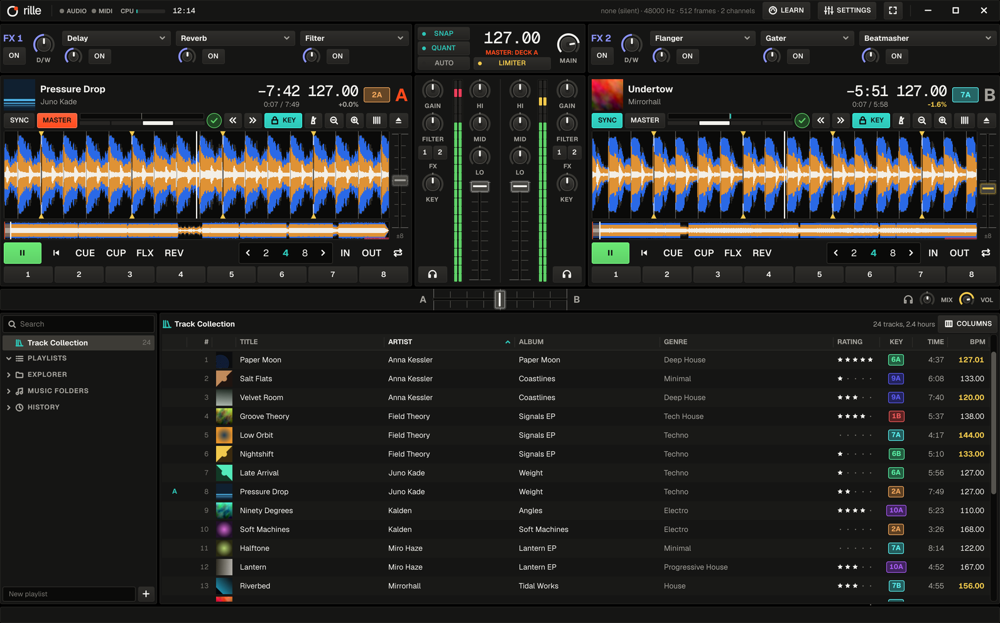
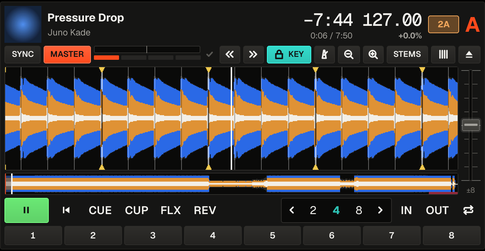
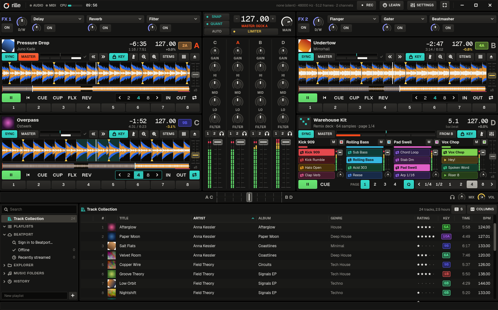

Beatgrids
rille listens to each track once and marks every beat. Tracks it isn't sure about are flagged, and you can fix them by hand.
Mix your music on up to four decks. rille finds the beat of every track by itself, so your mixes stay in time. Plug in your controller, or stream from Beatport.

rille listens to each track once and marks every beat. Tracks it isn't sure about are flagged, and you can fix them by hand.
Press sync and two tracks play in time. They stay together after loops, cue jumps and scratches.
Cue, eight hot cues, loops and beat jumps on every deck. Key lock keeps the pitch when you change the tempo.
Grab loops from any track or load short samples, and fire them off in time with the music.
Volume that levels itself, a three-band EQ, a filter, a crossfader and headphone cue, like on a club mixer.
Delay, reverb, filter, flanger, gater and beatmasher, all in time with the beat.
Your music folders with search, ratings, colours, playlists and history. Bring your Traktor collection along.
Ready-made settings for popular DJ controllers, lights included. Teach rille any other MIDI controller with MIDI learn.
Split a track into drums, bass, vocals and the rest, and turn each part up or down.
Record your mix to a file, together with a list of the tracks you played.
Every track gets a grid of beat markers, placed on the kick drum. Most music gets an even grid, tracks that speed up or slow down get one that follows them, and live-played music gets a marker on every single beat.
Not sure a grid is right? Press TICK to hear a click on every beat. Move the grid in the grid editor if needed, and rille remembers it.


Plug in your sound card and play. Listen to the next track on headphones before the crowd hears it, with a sound card that has four outputs, or by splitting a two-output one between speakers and headphones.
Mixing on a hardware mixer like the Allen & Heath Xone:96? rille can send every deck to its own mixer channel.
With a Beatport streaming subscription, the whole Beatport catalog opens inside rille. Search it, open your Beatport playlists, or paste a link from beatport.com.
Streamed tracks get beatgrids just like your own files, and your cues and grid fixes are kept.
Under Settings → Beatport. rille keeps only a sign-in token, never your password.
Search, paste a link, or open your playlists and the tracks you played before.
A track starts playing within seconds, while the rest downloads.
Sync, key lock, hot cues and loops work as with your own music. Tracks stay on your computer up to a size you choose.
Needs a Beatport streaming subscription; lossless FLAC needs the Professional plan. rille is an independent project and is not affiliated with or endorsed by Beatport.
rille comes with ready-made settings for these controllers. Any other MIDI controller can be set up with MIDI learn: move a knob, click the control on screen, done.
On Linux, the Native Instruments controllers need a one-time permission setting; the manual shows how. Traktor, Xone, DDJ and the other product names belong to their owners; rille is an independent project.
rille runs on Mac and Linux.
For Macs with an Apple chip (M1 or newer) on macOS 12 or later. Open the downloaded file and drag rille into your Applications folder.
Download for MacThe first time you open rille, your Mac will say it can't check the app, because rille isn't registered with Apple yet. Go to System Settings → Privacy & Security, scroll down and click Open Anyway. You only need to do this once.
For 64-bit PCs on recent distributions. Download the file, allow it to run and open it.
Download for LinuxTo allow it to run, right-click the file, open Properties and turn on Allow executing file as program, or run chmod +x rille-x86_64.AppImage. If it still doesn't open, install libfuse2.
Prefer Flatpak? Download rille-x86_64.flatpak and install it with flatpak install rille-x86_64.flatpak. Needs Flathub set up.
Arch users can install the included package with cd packaging/arch && makepkg -si, which also sets up the controller permissions.
rille is written in Rust and Qt. In a copy of the source, ./scripts/install.sh builds and installs it for your user. Requirements are in the manual on GitHub.